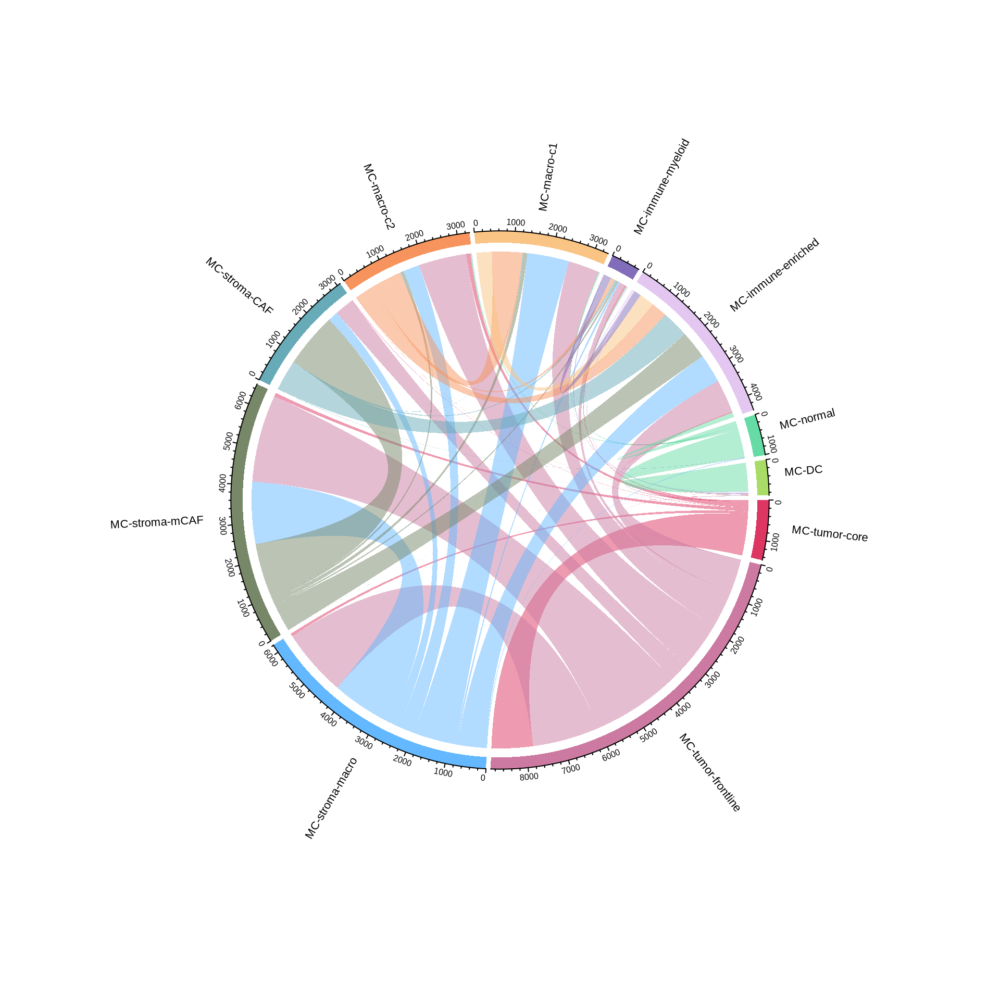

pkgs <- c("fs", "futile.logger", "configr", "stringr", "ggpubr", "ggthemes",
"SingleCellExperiment", "RColorBrewer", "vroom", "jhtools", "glue",
"jhuanglabHyperion", "openxlsx", "ggsci", "ggraph", "patchwork",
"cowplot", "tidyverse", "dplyr", "rstatix", "magrittr", "igraph",
"tidygraph", "ggtree", "aplot", "circlize")
suppressMessages(conflicted::conflict_scout())
for (pkg in pkgs){
suppressPackageStartupMessages(library(pkg, character.only = T))
}
res_dir <- "./results/figure2" %>% checkdir
dat_dir <- "./data" %>% checkdir
config_dir <- "./config" %>% checkdir
#colors config
config_fn <- glue::glue("{config_dir}/configs.yaml")
stype3_cols <- jhtools::show_me_the_colors(config_fn, "stype3")
ctype10_cols <- jhtools::show_me_the_colors(config_fn, "cell_type_new")
meta_cols <- jhtools::show_me_the_colors(config_fn, "meta_color")
#read in coldata
coldat <- readr::read_csv(glue::glue("{dat_dir}/sce_coldata.csv"))
meta_clu <- readxl::read_excel(glue::glue("{dat_dir}/meta_clu.xlsx")) %>% dplyr::select(-9)figure2
figure2b
# define cell groups
epiendo_cells <- c("Epithelial tumor cell", "Normal epithelial cell", "Endothelial cell")
immu_stroma_cells <- c("DC", "MDSC", "Monocyte", "B cell", "CD8+ T cell", "CD4+ T cell",
"HLA-DR-CD163- mp", "HLA-DR-CD163+ mp", "HLA-DR+CD163- mp",
"HLA-DR+CD163+ mp", "HLA-DR-CD163- MMT", "HLA-DR+CD163- MMT",
"HLA-DR+CD163+ MMT", "PSC", "myoCAF", "Col1+ CAF")
other_cells <- c("CCR6+ cell", "B7-H4+ cell", "Ki67+ cell", "Vim+ cell", "Unknown")
grouping_celltype <- data.frame(cell_type_new = c(epiendo_cells, immu_stroma_cells, other_cells),
meta_celltype = c(rep("Epi-endo", 3), rep("Immune-stroma", 16), rep("Others", 5)))
# calculate fraction data
col_frac <- coldat %>% group_by(cluster_names, cell_type_new) %>% dplyr::mutate(cell_clu_count = n()) %>%
group_by(cluster_names) %>% dplyr::mutate(all_count = n(), frac = cell_clu_count / all_count) %>%
group_by(cell_type_new) %>% dplyr::mutate(all_c_count = n(), frac2 = cell_clu_count / all_c_count)
col_frac_s <- col_frac %>% select(cluster_names, cell_type_new, frac2, frac) %>%
na.omit() %>% unique() %>% as.data.frame()
col_frac_wide <- col_frac_s %>% select(-frac) %>%
pivot_wider(names_from = cell_type_new, values_from = frac2, values_fill = 0) %>%
as.data.frame() %>% column_to_rownames(var = "cluster_names") %>% as.matrix()
col_frac_wide <- col_frac_wide[, c(epiendo_cells, immu_stroma_cells)]
ht_mat <- scale(t(col_frac_wide))
# grouped scale
scale_this <- function(x){
(x - mean(x, na.rm=TRUE)) / sd(x, na.rm=TRUE)
}
plot_data <- col_frac_s %>%
group_by(cluster_names) %>% dplyr::mutate(frac2_scaled = scale_this(frac2)) %>%
group_by(cell_type_new) %>% dplyr::mutate(frac_scaled_byrow = scale_this(frac))
plot_data <- left_join(plot_data, grouping_celltype) %>% ungroup() %>%
dplyr::filter(meta_celltype != "Others")
# calculate dendrogram
clust <- hclust(dist(ht_mat))
v_clust <- hclust(dist(t(ht_mat)))
ddgram_col <- as.dendrogram(v_clust)
ggtree_plot_col <- ggtree(ddgram_col) + layout_dendrogram()
ddgram <- as.dendrogram(clust)
ggtree_plot <- ggtree::ggtree(ddgram)
# set colors and output location
col_fun1 = circlize::colorRamp2(c(-1, 0, 1, 2, 3), c("#5658A5", "#8BCDA3", "#FBF4AA", "#F16943", "#9D1A44"))
meta_colors <- c("Epi-endo" = "#B61932", "Immune-stroma" = "#568AC2", "Others" = "#BEA278")
ctype_colors <- data.frame(meta_colors, meta_celltype = names(meta_colors))
plot_data <- left_join(plot_data, ctype_colors, by = "meta_celltype")
# main plot
dotplot3 <- plot_data %>%
dplyr::mutate(`Enrichment\nin cell types` = frac2_scaled) %>%
dplyr::mutate(`Enrichment\nin clusters` = frac_scaled_byrow) %>%
dplyr::mutate(cell_type_new = factor(cell_type_new, levels = clust$labels[clust$order]),
cluster = factor(cluster_names, levels = v_clust$labels[v_clust$order])) %>%
ggplot(aes(x=cluster, y = cell_type_new, color = `Enrichment\nin clusters`, size = `Enrichment\nin cell types`)) +
geom_point() +
cowplot::theme_cowplot() +
theme(axis.line = element_blank()) +
theme(axis.text.x = element_text(angle = 90, vjust = 0.5, hjust = 1)) +
xlab('') +
ylab('') +
theme(axis.ticks = element_blank()) +
theme(plot.margin = unit(c(0, 0, 0, 0), "cm")) +
scale_color_gradientn(colours = col_fun1(seq(-1, 4, by = 0.2))) +
scale_y_discrete(position = "right")
# handy function to alter the legend
addSmallLegend <- function(myPlot, pointSize = 4, textSize = 8) {
myPlot +
guides(shape = guide_legend(override.aes = list(size = pointSize))) +
theme(legend.title = element_text(size = textSize),
legend.text = element_text(size = textSize),
legend.position = c(1.1, -0.3), ## legend.justification does not work well
legend.direction = "horizontal")
}
dotplot3_s <- addSmallLegend(dotplot3)
# dendrograms
ggtree_plot <- ggtree_plot + ylim2(dotplot3)
ggtree_plot_col <- ggtree_plot_col + xlim2(dotplot3)
# row labels of cell metaclusters
labels <- ggplot(plot_data %>%
dplyr::mutate(`Cell Categories` = meta_celltype,
cell_type_new = factor(cell_type_new, levels = clust$labels[clust$order])),
aes(y = cell_type_new, x = 3, fill = `Cell Categories`)) +
geom_tile() +
scale_fill_manual(values = meta_colors) +
ylim2(dotplot3)
# legend
legend <- plot_grid(ggpubr::get_legend(labels + theme(legend.position = "bottom")))
labels <- labels + theme_nothing() + theme(legend.position = "none") +
theme(plot.margin = unit(c(0, 0, 0, 0), "cm"))
# merged plot
merged <- plot_spacer() + plot_spacer() + plot_spacer() + plot_spacer() + ggtree_plot_col +
plot_spacer() + plot_spacer() + plot_spacer() + plot_spacer() + plot_spacer() +
ggtree_plot + plot_spacer() + labels + plot_spacer() + dotplot3_s +
plot_spacer() + plot_spacer() + plot_spacer() + plot_spacer() + plot_spacer() +
plot_spacer() + plot_spacer() + plot_spacer() + plot_spacer() + legend +
plot_layout(ncol = 5, widths = c(0.7, -0.3, 0.2, -0.25, 4.2), heights = c(0.9, -0.4, 4, -0.5, 0.9))
ggsave(glue::glue("{res_dir}/fig2b_dotplot_main.pdf"), merged, height = 7, width = 9)
mergedfigure2c
# use fast_tsne function
source("/cluster/apps/FIt-SNE/1.2.1/fast_tsne.R", chdir = T)
# set empty theme
theme_no <- function (font_size = 14, font_family = "", rel_small = 12/14) {
theme_void(base_size = font_size, base_family = font_family) %+replace%
theme(line = element_blank(), rect = element_blank(),
text = element_text(family = font_family, face = "plain",
color = "black", size = font_size, lineheight = 0.9,
hjust = 0.5, vjust = 0.5, angle = 0, margin = margin(),
debug = FALSE), axis.line = element_blank(),
axis.line.x = NULL, axis.line.y = NULL, axis.text = element_blank(),
axis.text.x = NULL, axis.text.x.top = NULL, axis.text.y = NULL,
axis.text.y.right = NULL, axis.ticks = element_blank(),
axis.ticks.length = unit(0, "pt"), axis.title = element_blank(),
axis.title.x = NULL, axis.title.x.top = NULL, axis.title.y = NULL,
axis.title.y.right = NULL, legend.background = element_blank(),
panel.background = element_blank(),
panel.border = element_blank(), panel.grid = element_blank(),
panel.grid.major = NULL, panel.grid.minor = NULL,
panel.spacing = unit(font_size/2, "pt"), panel.spacing.x = NULL,
panel.spacing.y = NULL, panel.ontop = FALSE, strip.background = element_blank(),
strip.text = element_blank(), strip.text.x = NULL,
strip.text.y = NULL, strip.placement = "inside",
strip.placement.x = NULL, strip.placement.y = NULL,
strip.switch.pad.grid = unit(0, "cm"), strip.switch.pad.wrap = unit(0, "cm"),
plot.background = element_blank(), plot.title = element_blank(),
plot.subtitle = element_blank(), plot.caption = element_blank(),
plot.tag = element_text(face = "bold", hjust = 0,
vjust = 0.7), plot.tag.position = c(0, 1),
plot.margin = margin(0,0, 0, 0), complete = TRUE)
}
df_com <- distinct(coldat[, c("cluster_names", "community_name", "meta_cluster")])
# Option 3 fast_tsne & cell interaction data. for details of m_list, see
# ~/projects/hyperion/code/community/data_generation/1_community_clusters_generation.R
m_list <- readr::read_rds(glue::glue("{dat_dir}/m_list_0.rds"))
m <- do.call(rbind, unname(m_list)) %>% as.matrix()
m <- m[!endsWith(rownames(m), "_NA"), ]
res_tsne <- fftRtsne(m)
tsne_result3 <- data.frame(community_name = rownames(m),
tsne_1 = res_tsne[, 1],
tsne_2 = res_tsne[, 2])
tsne_result3 <- left_join(tsne_result3,
df_com, by = "community_name")
# plot and output
tsne_plot_3 <- ggplot(tsne_result3,
aes(x = tsne_1,
y = tsne_2,
color = meta_cluster,
fill = meta_cluster)) +
geom_point(size = 0.001, alpha = 0.5) +
scale_color_manual(values = meta_cols) +
scale_fill_manual(values = meta_cols) +
theme_no() +
labs(color = "Meta Clusters") +
theme(legend.position = "none")
#guides(color = guide_legend(override.aes = list(size = 2, alpha = 1)))
ggsave(glue::glue("{res_dir}/fig2c_tsne_community_meta_clusters.pdf"),
tsne_plot_3, dpi=300, width = 6, height = 7, units = "cm")
tsne_plot_3figure2d
# circular stacked barplot of community and meta cluster fraction
## get the fraction data of both community and meta levels
dt <- coldat[, c("cell_id","cell_type_new", "cluster_names", "community_name", "meta_cluster")] %>%
na.omit()
dt <- dt %>% group_by(cluster_names) %>% mutate(comm_count = length(unique(community_name))) %>%
dplyr::mutate(all_clu_cell_count = n()) %>% group_by(cluster_names, cell_type_new) %>%
dplyr::mutate(cell_allcount = n(), frac_cells_clu = cell_allcount / all_clu_cell_count)
dt <- dt %>% group_by(meta_cluster) %>% dplyr::mutate(comm_count_meta = length(unique(community_name))) %>%
dplyr::mutate(all_meta_cell_count = n()) %>% group_by(meta_cluster, cell_type_new) %>%
dplyr::mutate(cell_allcount_meta = n(), frac_cells_meta = cell_allcount_meta / all_meta_cell_count)
dt$count_avg_meta <- dt$cell_allcount_meta / dt$comm_count_meta
dt$count_avg <- dt$cell_allcount / dt$comm_count
dt$cell_type_new <- factor(dt$cell_type_new, levels = names(ctype10_cols))
commu_data <- unique(dt[, c("cell_type_new", "cluster_names",
"count_avg", "comm_count", "frac_cells_clu")])
meta_data <- unique(dt[, c("cell_type_new", "meta_cluster",
"count_avg_meta", "comm_count_meta", "frac_cells_meta")])
commu_dt <- commu_data[, c(1, 2, 5)] %>% gather(key = 'observation', value = 'value', -c(1, 2))
meta_dt <- meta_data[, c(1, 2, 5)] %>% gather(key = 'observation', value = 'value', -c(1, 2))
commu_dt <- commu_dt[, -3]
meta_dt <- meta_dt[, -3]
## convert the long matrix to wide matrix, with '0' filled in the missing cell
mtx_commu_dt <- commu_dt %>% ungroup() %>%
pivot_wider(id_cols = "cell_type_new", names_from = "cluster_names",
values_from = "value", values_fill = 0)
mtx_meta_dt <- meta_dt %>% ungroup() %>%
pivot_wider(id_cols = "cell_type_new", names_from = "meta_cluster",
values_from = "value", values_fill = 0)
## convert the wide matrices to the long ones
long_mtx_commu_dt <- mtx_commu_dt %>% pivot_longer(cols = NL1:DC2, names_to = "names", values_to = "value")
levels(long_mtx_commu_dt$names) <- c(
"TM1", "TB2", "TB1", "ST_MP2", "ST_MP1", "ST_mCAF2",
"ST_mCAF1", "ST_CAF3", "ST_CAF2", "ST_CAF1", "C2_MP2",
"C2_MP1", "C1_MP2", "C1_MP1", "IM_M", "IM_e2", "IM_e1",
"DC2", "DC1", "NL3", "NL2", "NL1"
)
long_mtx_commu_dt$group <- 'cluster'
long_mtx_meta_dt <- mtx_meta_dt %>% pivot_longer(cols = "MC-normal":"MC-tumor-core", names_to = "names", values_to = "value")
levels(long_mtx_meta_dt$names) <-
rev(c(
"MC-tumor-core",
"MC-tumor-frontline",
"MC-stroma-macro",
"MC-stroma-mCAF",
"MC-stroma-CAF",
"MC-macro-c2",
"MC-macro-c1",
"MC-immune-myeloid",
"MC-immune-enriched",
"MC-DC",
"MC-normal"
))
long_mtx_meta_dt$group <- 'metacluster'
## combine the 2 matrices
data <- rbind(long_mtx_commu_dt, long_mtx_meta_dt)
## set the empty area
empty_bar <- 2
nObsType <- nlevels(as.factor(data$cell_type_new))
to_add <-
data.frame(matrix(
data = NA,
nrow = empty_bar * nlevels(as.factor(data$group)) * nObsType,
ncol(data)
))
colnames(to_add) <- colnames(data)
to_add$group <-
rep(unique(data$group), each = empty_bar)
data <- rbind(data, to_add)
data <- data %>% arrange(group, names)
data$id <-
rep(seq(1, nrow(data) / nObsType) , each = nObsType)
## set the label data
label_data <-
data %>% group_by(id, names) %>% summarize(tot = sum(value))
number_of_bar <- nrow(label_data)
angle <-
90 - 360 * (label_data$id - 0.5) / number_of_bar
# I substract 0.5 because the letter must have the angle of the center of the bars.
# Not extreme right(1) or extreme left (0)
label_data$hjust <- ifelse(angle <= -90, 1, 0)
label_data$angle <- ifelse(angle <= -90, angle + 180, angle)
# prepare a data frame for base lines
base_data <- data %>%
group_by(group) %>%
summarize(start = min(id), end = max(id) - empty_bar) %>%
rowwise() %>%
mutate(title = mean(c(start, end)))
# prepare a data frame for grid (scales)
grid_data <- base_data
grid_data$end <-
grid_data$end[c(nrow(grid_data), 1:nrow(grid_data) - 1)] + .5
grid_data$start <- grid_data$start - .5
grid_data <- grid_data[-1,]
p <- ggplot(data) +
# Add the stacked bar
geom_bar(
aes(x = as.factor(id), y = value, fill = cell_type_new),
stat = "identity",
position = 'fill',
alpha = 1
) +
scale_fill_manual(values = ctype10_cols) +
# Add a val=1/.75/.50/.25/0 lines. I do it at the beginning to make sur barplots are OVER it.
geom_segment(
data = grid_data,
aes(
x = end,
y = 0,
xend = start,
yend = 0
),
colour = "grey",
alpha = 1,
size = 0.3 ,
inherit.aes = FALSE
) +
geom_segment(
data = grid_data,
aes(
x = end,
y = 0.25,
xend = start,
yend = .25
),
colour = "grey",
alpha = 1,
size = 0.3 ,
inherit.aes = FALSE
) +
geom_segment(
data = grid_data,
aes(
x = end,
y = .5,
xend = start,
yend = .5
),
colour = "grey",
alpha = 1,
size = 0.3 ,
inherit.aes = FALSE
) +
geom_segment(
data = grid_data,
aes(
x = end,
y = .75,
xend = start,
yend = .75
),
colour = "grey",
alpha = 1,
size = 0.3 ,
inherit.aes = FALSE
) +
geom_segment(
data = grid_data,
aes(
x = end,
y = 1,
xend = start,
yend = 1
),
colour = "grey",
alpha = 1,
size = 0.3 ,
inherit.aes = FALSE
) +
# Add text showing the value of each 1.00/.75/.50/.25/0 lines
ggplot2::annotate(
"text",
x = rep(max(data$id), 5),
y = c(0, .25, .5, .75, 1),
label = c("0", '0.25', '0.5', '0.75', '1.0') ,
color = "darkgray",
size = 3 ,
angle = 0,
fontface = "bold",
hjust = 1
) +
ylim(-.3, max(label_data$tot, na.rm = T) + .5) +
theme_minimal() +
theme(
legend.position = "none",
axis.text = element_blank(),
axis.title = element_blank(),
panel.grid = element_blank(),
plot.margin = unit(rep(-1, 4), "cm")
) +
coord_polar() +
# Add labels on top of each bar
geom_text(
data = label_data,
aes(
x = id,
y = tot + .04,
label = names,
hjust = hjust
),
color = "black",
fontface = "bold",
alpha = 1,
size = 2.5,
angle = label_data$angle,
inherit.aes = FALSE
)
ggsave(glue::glue("{res_dir}/fig2d_cell_type_prop_in_MCs_barplot_circle.pdf"), p, height = 7, width = 7)
pfigure2e
# read in and alter the data
ci_weighted <- readr::read_rds(glue::glue("{dat_dir}/ci_weighted_list.rds"))
ci_data <- data.table::rbindlist(ci_weighted)
dim(ci_data)[1] 56905 10# rename
clu_new <- meta_clu$cluster_names %>% `names<-`(meta_clu$old_cluster_name)
ci_data$from_cluster <- clu_new[ci_data$from_cluster]
ci_data$to_cluster <- clu_new[ci_data$to_cluster]
meta_new <- meta_clu$meta_short_new %>% `names<-`(meta_clu$cluster_names)
ci_data$from_meta <- meta_new[ci_data$from_cluster]
ci_data$to_meta <- meta_new[ci_data$to_cluster]
# meta-cluster interaction with self-interaction
ci_matrix3 <- ci_data %>% group_by(from_meta, to_meta) %>% summarise(count = n()) %>%
pivot_wider(names_from = from_meta, values_from = count, values_fill = 0) %>%
as.data.frame() %>% column_to_rownames(var = "to_meta") %>% as.matrix()
# cluster interaction without self-interaction
ci_matrix4 <- ci_matrix3
for (i in 1:nrow(ci_matrix4)) {
x <- rownames(ci_matrix4)[i]
ci_matrix4[x, x] <- 0
}
ci_matrix4 <- ci_matrix4[c("MC-tumor-core",
"MC-tumor-frontline",
"MC-stroma-macro",
"MC-stroma-mCAF",
"MC-stroma-CAF",
"MC-macro-c2",
"MC-macro-c1",
"MC-immune-myeloid",
"MC-immune-enriched",
"MC-DC",
"MC-normal"),
c("MC-tumor-core",
"MC-tumor-frontline",
"MC-stroma-macro",
"MC-stroma-mCAF",
"MC-stroma-CAF",
"MC-macro-c2",
"MC-macro-c1",
"MC-immune-myeloid",
"MC-immune-enriched",
"MC-DC",
"MC-normal")]
# rotate labels
#pdf(glue::glue("{res_dir}/fig2e_metacluster_interaction_circ_noself_rotate.pdf"), width = 10, height = 10)
chordDiagram(ci_matrix4, grid.col = meta_cols, annotationTrack = c("grid", "axis"),
preAllocateTracks = list(track.height = max(strwidth(unlist(dimnames(ci_matrix4))))))
circos.track(track.index = 1, panel.fun = function(x, y) {
circos.text(CELL_META$xcenter, CELL_META$ylim[1], CELL_META$sector.index, cex = 0.7,
facing = "clockwise", niceFacing = TRUE, adj = c(-0.2, 0))
}, bg.border = NA)